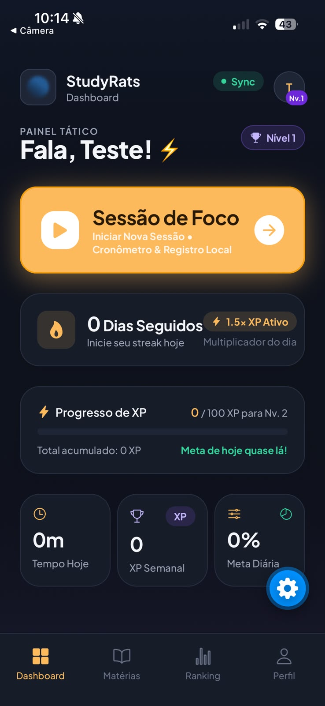
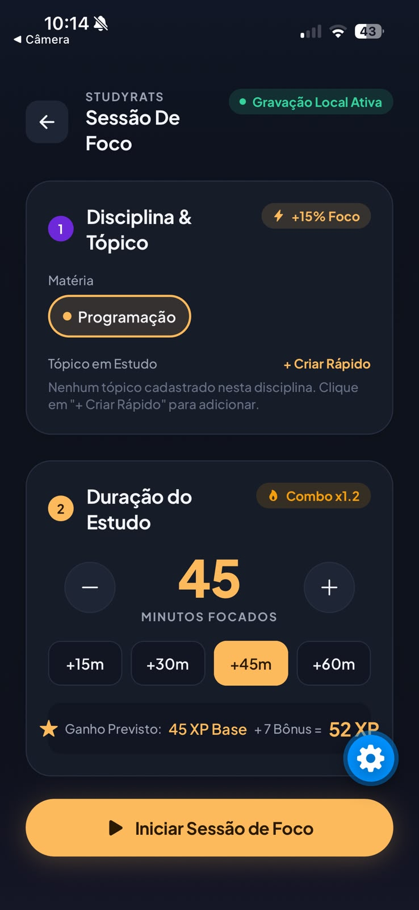
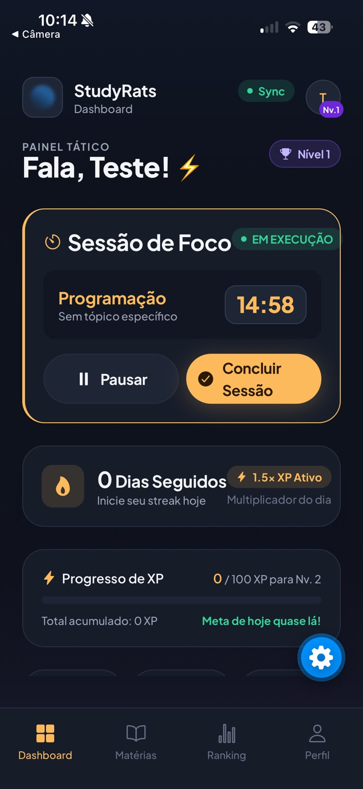
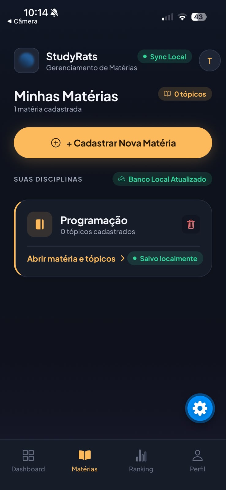
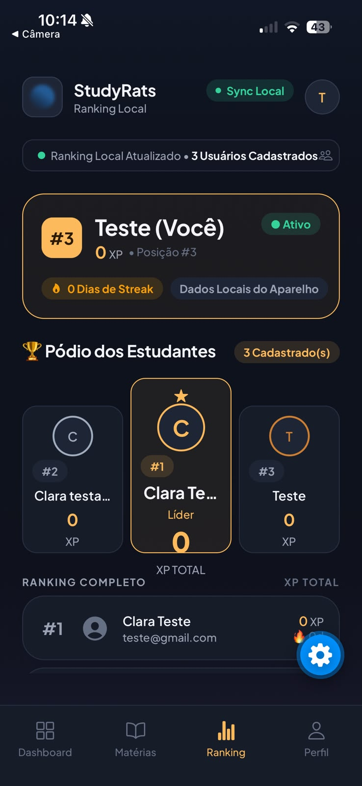
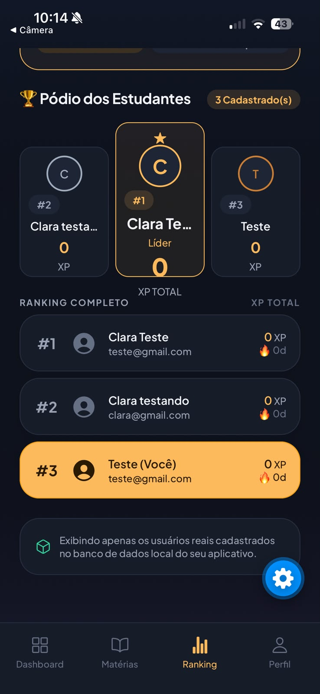
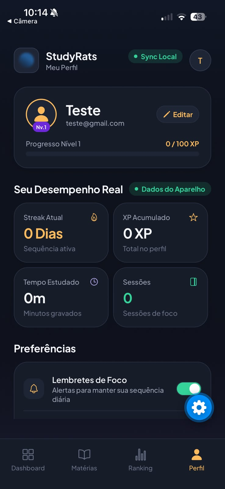
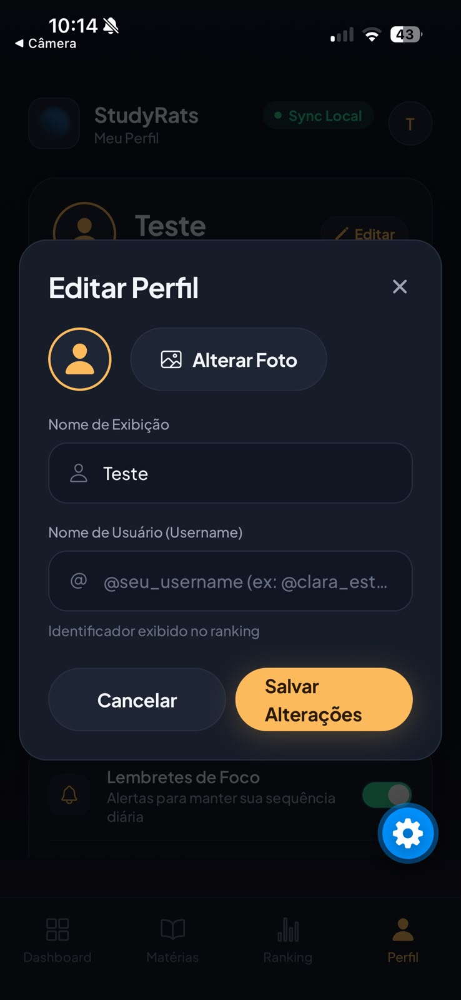
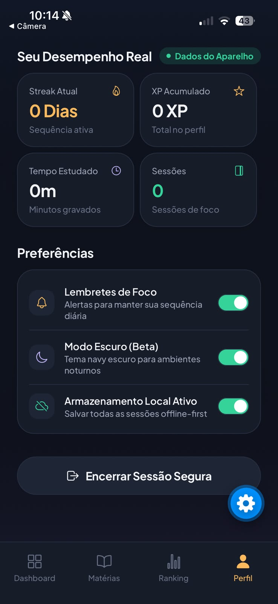

<!DOCTYPE html>
<html lang="pt-BR">
<head>
    <meta charset="UTF-8">
    <meta name="viewport" content="width=device-width, initial-scale=1.0">
    <title>StudyRats - Apresentação Técnica Fase 2</title>
    <!-- Fontes -->
    <link rel="preconnect" href="https://fonts.googleapis.com">
    <link rel="preconnect" href="https://fonts.gstatic.com" crossorigin>
    <link href="https://fonts.googleapis.com/css2?family=Plus+Jakarta+Sans:wght@400;500;600;700;800&family=JetBrains+Mono:wght@400;500;700&display=swap" rel="stylesheet">
    <!-- Tailwind CSS -->
    <script src="https://cdn.tailwindcss.com"></script>
    <script>
        tailwind.config = {
            theme: {
                extend: {
                    fontFamily: {
                        sans: ['"Plus Jakarta Sans"', 'sans-serif'],
                        mono: ['"JetBrains Mono"', 'monospace'],
                    },
                    colors: {
                        brand: {
                            coral: '#FF6B6B',
                            coralLight: '#FFEAEA',
                            orange: '#FA8231',
                            orangeLight: '#FFF2E5',
                            yellow: '#FFD32A',
                            yellowLight: '#FFFCEB',
                            green: '#20BF6B',
                            greenLight: '#E8F8F0',
                            blue: '#3867D6',
                            blueLight: '#EBF2FF',
                            purple: '#8854D0',
                            purpleLight: '#F3EDFC',
                            black: '#19191B',
                            bg: '#F6F7F9'
                        }
                    }
                }
            }
        }
    </script>
    <!-- React & Babel -->
    <script crossorigin src="https://unpkg.com/react@18/umd/react.development.js"></script>
    <script crossorigin src="https://unpkg.com/react-dom@18/umd/react-dom.development.js"></script>
    <script src="https://unpkg.com/@babel/standalone/babel.min.js"></script>
    <!-- Lucide Icons -->
    <script src="https://unpkg.com/lucide@latest"></script>
    <style>
        .slide-enter { animation: slideIn 0.4s cubic-bezier(0.16, 1, 0.3, 1) forwards; }
        @keyframes slideIn { from { opacity: 0; transform: translateY(20px); } to { opacity: 1; transform: translateY(0); } }
        .squircle { border-radius: 24px; }
        /* Esconder scrollbar na listagem de prints */
        .hide-scrollbar::-webkit-scrollbar { display: none; }
        .hide-scrollbar { -ms-overflow-style: none; scrollbar-width: none; }
    </style>
</head>
<body class="bg-brand-bg text-brand-black overflow-hidden font-sans">
    <div id="root" class="h-screen w-screen flex flex-col"></div>

    <script type="text/babel">
        const { useState, useEffect } = React;

        const slides = [
            // SLIDE 1: Capa
            {
                id: "capa", section: "Início", title: "StudyRats - Fase 2", theme: "blue",
                content: (
                    <div className="flex flex-col items-center justify-center h-full text-center space-y-6">
                        <div className="w-32 h-32 bg-brand-blue rounded-3xl rotate-12 flex items-center justify-center shadow-xl mb-4">
                            <i data-lucide="graduation-cap" className="w-16 h-16 text-white -rotate-12"></i>
                        </div>
                        <h1 className="text-6xl font-extrabold text-brand-blue tracking-tight">StudyRats</h1>
                        <h2 className="text-2xl font-bold text-gray-800 mt-2 bg-brand-blueLight px-6 py-2 rounded-2xl border border-blue-200">
                            Implementação do app StudyRats - Fase "Domínio e Interface Primeiro" (100% Mock / 80%+ Cobertura)
                        </h2>
                        <p className="text-xl font-medium text-gray-600 max-w-3xl mt-4">
                            Inteligência Artificial e Gamificação para combater a procrastinação e estruturar a rotina de estudos.
                        </p>
                        <div className="mt-8">
                            <p className="font-bold text-gray-800 text-lg">Equipe:</p>
                            <p className="text-gray-500">Maria Clara Miguel & Sthefany Bueno</p>
                        </div>
                    </div>
                )
            },
            // SLIDE 2: Recapitulação
            {
                id: "recapitulacao", section: "O Projeto", title: "O que é o StudyRats?", theme: "yellow",
                content: (
                    <div className="flex flex-col justify-start h-full max-w-6xl mx-auto w-full overflow-y-auto pb-24 pt-8 hide-scrollbar">
                        <h2 className="text-4xl font-bold text-brand-yellow mb-6 drop-shadow-sm text-black">A Origem do StudyRats</h2>
                        <p className="text-xl text-gray-700 mb-8 max-w-4xl shrink-0">
                            A procrastinação é um dos maiores vilões dos estudantes. O StudyRats nasceu para atacar esse problema usando duas frentes poderosas: Gamificação e Inteligência Artificial.
                        </p>
                        
                        <div className="grid grid-cols-2 gap-8 flex-1">
                            <div className="bg-white p-8 rounded-3xl flex flex-col shadow-sm border border-yellow-100">
                                <div className="w-16 h-16 bg-brand-yellowLight rounded-2xl flex items-center justify-center text-brand-yellow mb-6"><i data-lucide="gamepad-2" className="w-8 h-8"></i></div>
                                <h3 className="font-bold text-2xl text-black mb-4">1. Gamificação (O Rato)</h3>
                                <p className="text-gray-600 leading-relaxed text-lg">
                                    O estudante ganha XP por manter o foco, cria 'streaks' de dias estudados e sobe de nível. Transformamos o tédio do estudo em um jogo de evolução contínua.
                                </p>
                            </div>

                            <div className="bg-white p-8 rounded-3xl flex flex-col shadow-sm border border-yellow-100">
                                <div className="w-16 h-16 bg-brand-yellowLight rounded-2xl flex items-center justify-center text-brand-yellow mb-6"><i data-lucide="bot" className="w-8 h-8"></i></div>
                                <h3 className="font-bold text-2xl text-black mb-4">2. Inteligência Artificial</h3>
                                <p className="text-gray-600 leading-relaxed text-lg">
                                    Após uma sessão de foco intenso (Método Pomodoro), usamos IA Integrada para gerar automaticamente resumos dos tópicos e validação do aprendizado. O estudante não estuda mais sozinho.
                                </p>
                            </div>
                        </div>
                    </div>
                )
            },
            // SLIDE 2: Camada de Domínio Puro
            {
                id: "dominio", section: "1. Domínio Puro", title: "Regras de Negócio (/domain)", theme: "green",
                content: (
                    <div className="flex flex-col justify-start h-full max-w-6xl mx-auto w-full overflow-y-auto pb-24 pt-8 hide-scrollbar">
                        <h2 className="text-4xl font-bold text-brand-green mb-6">Camada de Domínio Puro</h2>
                        <p className="text-lg text-gray-600 mb-8 max-w-4xl shrink-0">
                            Contém as regras de negócio centrais e é 100% puro, sem importação de bibliotecas externas (como Expo ou Supabase).
                        </p>
                        
                        <div className="grid grid-cols-2 gap-6 flex-1">
                            <div className="bg-white p-6 squircle border border-brand-greenLight shadow-sm flex flex-col">
                                <h3 className="font-bold text-xl text-brand-green flex items-center gap-2 mb-2"><i data-lucide="box"></i> Value Objects</h3>
                                <p className="text-sm text-gray-600 mb-2">Imutáveis, sem ID próprio, validados na criação para evitar estados inválidos no sistema.</p>
                                <ul className="text-sm space-y-2 mb-4 list-disc list-inside font-mono text-gray-700">
                                    <li><strong>Email:</strong> Valida formato com Regex</li>
                                    <li><strong>Senha:</strong> Força mínima de caracteres</li>
                                    <li><strong>Coordenada:</strong> Regras de GPS (latitude/longitude)</li>
                                </ul>
                                <div className="mt-auto">
                                    <p className="text-xs font-bold text-gray-400 mb-2">Snippet (src/domain/value-objects/Email.ts)</p>
                                    <pre className="bg-gray-900 text-brand-greenLight p-4 rounded-xl font-mono text-[10px] overflow-x-auto shadow-inner">
{`export class Email {
  private constructor(private readonly value: string) {}
  
  public static create(email: string): Email {
    const regex = /^[^\\s@]+@[^\\s@]+\\.[^\\s@]+$/;
    if (!regex.test(email)) throw new Error('Email inválido');
    return new Email(email);
  }
}`}
                                    </pre>
                                </div>
                            </div>
                            
                            <div className="bg-white p-6 squircle border border-brand-greenLight shadow-sm flex flex-col">
                                <h3 className="font-bold text-xl text-brand-green flex items-center gap-2 mb-2"><i data-lucide="database"></i> Entidades e Agregados</h3>
                                <p className="text-sm text-gray-600 mb-2">Objetos com identidade única que gerenciam seu próprio estado interno e regras de negócio.</p>
                                <ul className="text-sm space-y-2 mb-4 list-disc list-inside font-mono text-gray-700">
                                    <li><strong>Usuario:</strong> Nível, XP, Controle de Streak</li>
                                    <li><strong>SessaoEstudo:</strong> Tempos de foco, validade</li>
                                </ul>
                                <div className="mt-auto">
                                    <p className="text-xs font-bold text-gray-400 mb-2">Snippet (src/domain/entities/Usuario.ts)</p>
                                    <pre className="bg-gray-900 text-brand-greenLight p-4 rounded-xl font-mono text-[10px] overflow-x-auto shadow-inner">
{`import { Email } from '../value-objects/Email';
// NOTA: 100% puro. Sem importar bibliotecas externas.

export class Usuario {
  private constructor(private props: UsuarioProps) {}

  public adicionarXP(quantidade: number): void {
    if (quantidade < 0) throw new Error('XP inválido');
    this.props.xpTotal += quantidade;
    // ...
  }
}`}
                                    </pre>
                                </div>
                            </div>

                            <div className="bg-white p-6 squircle border border-brand-greenLight shadow-sm">
                                <h3 className="font-bold text-xl text-brand-green flex items-center gap-2 mb-2"><i data-lucide="activity"></i> Serviços de Domínio</h3>
                                <p className="text-sm text-gray-600">Operações que não pertencem a uma entidade específica.</p>
                                <ul className="text-sm space-y-2 mt-2 list-disc list-inside font-mono text-gray-700">
                                    <li><strong>CalculadoraXPService:</strong> Aplica multiplicadores e bônus</li>
                                    <li><strong>GerenciadorNivelService:</strong> Calcula curva de experiência</li>
                                </ul>
                            </div>

                            <div className="bg-white p-6 squircle border border-brand-greenLight shadow-sm">
                                <h3 className="font-bold text-xl text-brand-green flex items-center gap-2 mb-2"><i data-lucide="file-code-2"></i> Contratos e Interfaces</h3>
                                <p className="text-sm text-gray-600">Inversão de Dependência: Interfaces para que o domínio não dependa de frameworks.</p>
                                <ul className="text-sm space-y-2 mt-2 list-disc list-inside font-mono text-gray-700">
                                    <li><strong>IUsuarioRepository</strong></li>
                                    <li><strong>ISessionStorage</strong></li>
                                </ul>
                            </div>
                        </div>
                    </div>
                )
            },
            // SLIDE 3: Camada de Aplicação
            {
                id: "aplicacao", section: "2. Aplicação", title: "Casos de Uso e Testes", theme: "purple",
                content: (
                    <div className="flex flex-col justify-start h-full max-w-6xl mx-auto w-full overflow-y-auto pb-24 pt-8 hide-scrollbar">
                        <h2 className="text-4xl font-bold text-brand-purple mb-6">Camada de Aplicação</h2>
                        <p className="text-lg text-gray-600 mb-8 max-w-4xl shrink-0">
                            Contém a lógica de orquestração do sistema. Chamam as entidades e se comunicam através dos repositórios e gateways.
                        </p>

                        <div className="grid grid-cols-2 gap-8 flex-1">
                            <div className="space-y-6">
                                <h3 className="font-bold text-2xl text-brand-purple border-b pb-2">Principais Use Cases</h3>
                                <ul className="space-y-6">
                                    <li className="bg-white border border-brand-purpleLight p-5 rounded-2xl shadow-sm flex flex-col">
                                        <div className="mb-3">
                                            <p className="font-mono font-bold text-brand-purple text-lg">RegistrarSessaoUseCase</p>
                                            <p className="text-sm text-gray-700 mt-1">Orquestra a criação de uma sessão, foto via gateway, cálculos de XP e salva os resultados.</p>
                                        </div>
                                        <div className="mt-auto">
                                            <p className="text-xs font-bold text-gray-400 mb-2">Snippet (src/application/use-cases/RegistrarSessaoUseCase.ts)</p>
                                            <pre className="bg-gray-900 text-brand-purpleLight p-4 rounded-xl font-mono text-[9px] overflow-x-auto shadow-inner leading-tight">
{`export class RegistrarSessaoUseCase {
  constructor(
    private sessaoRepository: ISessaoEstudoRepository,
    private usuarioRepository: IUsuarioRepository,
    private cameraGateway: ICameraGateway
  ) {}

  async execute(request: Request): Promise<Response> {
    const usuario = await this.usuarioRepository.buscarPorId(request.usuarioId);
    const sessao = SessaoEstudo.create({ ... });
    
    if (request.comFoto) {
      const uriLocal = await this.cameraGateway.capturarFoto();
      if (uriLocal) sessao.anexarFoto(FotoSessao.create({ uriLocal }));
    }

    usuario.adicionarXP(request.duracaoMinutos);
    await this.sessaoRepository.salvar(sessao);
    await this.usuarioRepository.salvar(usuario);
    return { isSuccess: true, value: sessao };
  }
}`}
                                            </pre>
                                        </div>
                                    </li>
                                    <li className="bg-white border border-brand-purpleLight p-5 rounded-2xl shadow-sm flex flex-col">
                                        <div className="mb-3">
                                            <p className="font-mono font-bold text-brand-purple text-lg">GerarResumoUseCase</p>
                                            <p className="text-sm text-gray-700 mt-1">Injeta o IAGateway para gerar resumos via Gemini sem poluir as regras de negócio.</p>
                                        </div>
                                        <div className="mt-auto">
                                            <p className="text-xs font-bold text-gray-400 mb-2">Snippet (src/application/use-cases/GerarResumoUseCase.ts)</p>
                                            <pre className="bg-gray-900 text-brand-purpleLight p-4 rounded-xl font-mono text-[9px] overflow-x-auto shadow-inner leading-tight">
{`export class GerarResumoUseCase {
  constructor(
    private topicoRepository: ITopicoRepository,
    private iaGateway: IIAGateway
  ) {}

  async execute(topicoId: string): Promise<void> {
    const topico = await this.topicoRepository.buscarPorId(topicoId);
    
    // Chama adaptador externo de IA isolado do domínio
    const textoGerado = await this.iaGateway.gerarResumo(topico.titulo);
    
    const resumo = ResumoIA.create({ textoGerado });
    topico.adicionarResumo(resumo);
    
    await this.topicoRepository.salvar(topico);
  }
}`}
                                            </pre>
                                        </div>
                                    </li>
                                </ul>
                            </div>

                            <div className="space-y-6">
                                <h3 className="font-bold text-2xl text-brand-purple border-b pb-2">Testes In-Memory (TDD)</h3>
                                <div className="bg-gray-900 text-green-400 p-6 rounded-2xl font-mono text-sm shadow-xl sticky top-0">
                                    <p className="text-gray-400 mb-2">// Cobertura excepcional de testes:</p>
                                    <p>PASS  src/application/__tests__/RegistrarSessaoUseCase.spec.ts</p>
                                    <p>PASS  src/domain/__tests__/Usuario.spec.ts</p>
                                    <p className="mt-4 text-white">-------------------------|---------|---------|</p>
                                    <p className="text-white">File                     | % Stmts | % Branch|</p>
                                    <p className="text-white">-------------------------|---------|---------|</p>
                                    <p className="text-brand-yellow">All files                |   98.2  |   90.5  |</p>
                                    <p className="text-white">-------------------------|---------|---------|</p>
                                </div>
                            </div>
                        </div>
                    </div>
                )
            },
            // SLIDE 4: Interface do Usuário (COM PRINTS)
            {
                id: "interface", section: "3. Interface", title: "Interface do Usuário (Mobile Mocks)", theme: "orange",
                content: (
                    <div className="flex flex-col h-full max-w-7xl mx-auto w-full pt-4">
                        <h2 className="text-4xl font-bold text-brand-orange mb-4 px-8">Telas Principais (Expo Router)</h2>
                        <p className="text-lg text-gray-600 mb-6 max-w-4xl px-8">
                            Apresentando o design system oficial do StudyRats, com layouts responsivos desenvolvidos via React Native + Expo.
                        </p>
                        
                        <div className="flex gap-6 overflow-x-auto pb-8 pt-4 px-8 items-center flex-1 w-full snap-x hide-scrollbar">
                            
                            
                            
                            
                            
                            
                            
                            
                            
                            
                        </div>
                    </div>
                )
            },
            // SLIDE 5: Adaptadores e Context
            {
                id: "adaptadores", section: "4. Adaptadores", title: "Context API e Gateways de Hardware", theme: "coral",
                content: (
                    <div className="flex flex-col justify-start h-full max-w-6xl mx-auto w-full overflow-y-auto pb-24 pt-8 hide-scrollbar">
                        <h2 className="text-4xl font-bold text-brand-coral mb-6">Adaptadores, Hooks e Sessões</h2>
                        <div className="grid grid-cols-2 gap-8 flex-1">
                            <div className="space-y-6">
                                <div className="bg-white p-5 squircle border border-brand-coralLight shadow-sm flex flex-col">
                                    <h3 className="font-bold text-xl text-brand-coral flex items-center gap-2"><i data-lucide="layers"></i> Context API Global</h3>
                                    <p className="text-sm text-gray-600 mt-2 mb-4">Uso de Zustand e Context API para prover o estado global aos componentes visuais (Ex: ThemeProvider, AuthProvider) sem poluir o Domínio.</p>
                                    <div className="mt-auto">
                                        <p className="text-xs font-bold text-gray-400 mb-2">Snippet (src/providers/ThemeProvider.ts)</p>
                                        <pre className="bg-gray-900 text-brand-coralLight p-4 rounded-xl font-mono text-[10px] overflow-x-auto shadow-inner leading-tight">
{`import { create } from 'zustand';

export const useAppTheme = create<ThemeState>((set) => ({
  modoEscuro: true,
  colors: DarkColors,
  setModoEscuro: (ativo: boolean) => set({
    modoEscuro: ativo,
    colors: ativo ? DarkColors : LightColors,
  }),
}));`}
                                        </pre>
                                    </div>
                                </div>
                                <div className="bg-white p-5 squircle border border-brand-coralLight shadow-sm flex flex-col">
                                    <h3 className="font-bold text-xl text-brand-coral flex items-center gap-2"><i data-lucide="shield-check"></i> Sessão Segura</h3>
                                    <p className="text-sm text-gray-600 mt-2 mb-4">Uso do <code className="font-mono bg-gray-100 px-1">expo-secure-store</code> para persistir e recuperar credenciais de forma criptografada pelo próprio SO (Keychain iOS / Keystore Android).</p>
                                    <div className="mt-auto">
                                        <p className="text-xs font-bold text-gray-400 mb-2">Snippet (src/infrastructure/storage/SessionStorageSecureStore.ts)</p>
                                        <pre className="bg-gray-900 text-brand-coralLight p-4 rounded-xl font-mono text-[9px] overflow-x-auto shadow-inner leading-tight">
{`import * as SecureStore from 'expo-secure-store';
import { ISessionStorage } from '../../domain/gateways/ISessionStorage';

export class SessionStorageSecureStore implements ISessionStorage {
  async salvarSessionToken(token: string): Promise<void> {
    if (Platform.OS === 'web') {
      localStorage.setItem('studyrats_session_token', token);
      return;
    }
    await SecureStore.setItemAsync('studyrats_session_token', token);
  }
}`}
                                        </pre>
                                    </div>
                                </div>
                            </div>
                            <div className="space-y-6">
                                <div className="bg-white p-5 squircle border border-brand-coralLight shadow-sm flex flex-col">
                                    <h3 className="font-bold text-xl text-brand-coral flex items-center gap-2"><i data-lucide="plug"></i> Custom Hooks</h3>
                                    <p className="text-sm text-gray-600 mt-2 mb-4">A lógica das telas é encapsulada em hooks de ponte. O hook <code className="font-mono bg-gray-100 px-1">useAtividades</code>, por exemplo, abstrai a Injeção de Dependência (DI) e executa Casos de Uso gerenciando estados de carregamento.</p>
                                    <div className="mt-auto">
                                        <p className="text-xs font-bold text-gray-400 mb-2">Snippet (src/hooks/useAtividades.ts)</p>
                                        <pre className="bg-gray-900 text-brand-coralLight p-4 rounded-xl font-mono text-[9px] overflow-x-auto shadow-inner leading-tight">
{`import { DIContainer } from '../application/di/container';

export function useAtividades(usuarioId: string, container = DIContainer) {
  const [carregando, setCarregando] = useState(false);

  const registrarSessao = async (disciplinaId: string, topicoId: string, duracaoMinutos: number, comFoto: boolean) => {
    setCarregando(true);
    const res = await container.registrarSessao.execute({
      usuarioId, disciplinaId, topicoId, duracaoMinutos, comFoto
    });
    setCarregando(false);
    return res;
  };

  return { carregando, registrarSessao };
}`}
                                        </pre>
                                    </div>
                                </div>
                                <div className="bg-white p-5 squircle border border-brand-coralLight shadow-sm flex flex-col">
                                    <h3 className="font-bold text-xl text-brand-coral flex items-center gap-2"><i data-lucide="smartphone"></i> Gateways de Hardware</h3>
                                    <p className="text-sm text-gray-600 mt-2 mb-4">Adaptadores concretos que acessam o dispositivo: <code className="font-mono bg-gray-100 px-1">ExpoLocationGateway</code> e <code className="font-mono bg-gray-100 px-1">ExpoCameraGateway</code> abstraem a API do Expo.</p>
                                    <div className="mt-auto">
                                        <p className="text-xs font-bold text-gray-400 mb-2">Snippet (src/infrastructure/gateways/ExpoCameraGateway.ts)</p>
                                        <pre className="bg-gray-900 text-brand-coralLight p-4 rounded-xl font-mono text-[9px] overflow-x-auto shadow-inner leading-tight">
{`import { ICameraGateway } from '../../domain/gateways/ICameraGateway';
import * as ImagePicker from 'expo-image-picker';

export class ExpoCameraGateway implements ICameraGateway {
  async capturarFoto(): Promise<string | null> {
    const { status } = await ImagePicker.requestCameraPermissionsAsync();
    if (status !== 'granted') throw new Error('Sem permissão');

    const result = await ImagePicker.launchCameraAsync({
      mediaTypes: ImagePicker.MediaTypeOptions.Images,
      allowsEditing: true, quality: 0.8,
    });

    if (!result.canceled) return result.assets[0].uri;
    return null; 
  }
}`}
                                        </pre>
                                    </div>
                                </div>
                            </div>
                        </div>
                    </div>
                )
            },
            // SLIDE 6: Fase Mock
            {
                id: "fakes", section: "5. Ambiente Restrito", title: "Limitações da Fase Atual", theme: "yellow",
                content: (
                    <div className="flex flex-col justify-start h-full max-w-6xl mx-auto w-full overflow-y-auto pb-24 pt-8 hide-scrollbar">
                        <h2 className="text-4xl font-bold text-brand-yellow mb-6 drop-shadow-sm">O que Fica em Mock (Por Enquanto)</h2>
                        <p className="text-lg text-gray-700 mb-8 max-w-4xl shrink-0">
                            Esta entrega foca na robustez local. A integração remota será implementada futuramente.
                        </p>
                        
                        <div className="grid grid-cols-3 gap-6 flex-1">
                            <div className="bg-brand-yellowLight p-6 rounded-3xl flex flex-col">
                                <div className="flex items-center gap-3 mb-3">
                                    <div className="w-10 h-10 bg-white rounded-xl flex items-center justify-center text-brand-yellow shadow-sm"><i data-lucide="database-zap"></i></div>
                                    <h3 className="font-bold text-xl text-yellow-900">Armazenamento</h3>
                                </div>
                                <p className="text-sm text-yellow-800 leading-relaxed mb-4">
                                    Sem banco remoto (Supabase). Dados sendo persistidos localmente com AsyncStorage e fakes In-Memory Repository para os testes rápidos.
                                </p>
                                <div className="mt-auto">
                                    <p className="text-xs font-bold text-yellow-700 mb-2">Snippet (InMemoryUsuarioRepository.ts)</p>
                                    <pre className="bg-white text-yellow-900 p-4 rounded-xl font-mono text-[9px] overflow-x-auto shadow-sm border border-yellow-200 leading-tight">
{`export class InMemoryUsuarioRepository implements IUsuarioRepository {
  private itens: Usuario[] = [];

  async salvar(usuario: Usuario): Promise<void> {
    const idx = this.itens.findIndex(i => i.id === usuario.id);
    if (idx >= 0) this.itens[idx] = usuario;
    else this.itens.push(usuario);
  }
}`}
                                    </pre>
                                </div>
                            </div>

                            <div className="bg-brand-yellowLight p-6 rounded-3xl flex flex-col">
                                <div className="flex items-center gap-3 mb-3">
                                    <div className="w-10 h-10 bg-white rounded-xl flex items-center justify-center text-brand-yellow shadow-sm"><i data-lucide="cpu"></i></div>
                                    <h3 className="font-bold text-xl text-yellow-900">Sensores e IA</h3>
                                </div>
                                <p className="text-sm text-yellow-800 leading-relaxed mb-4">
                                    Simulações e delays pré-programados substituem os chamados pagos à API do Gemini e o GPS no emulador.
                                </p>
                                <div className="mt-auto">
                                    <p className="text-xs font-bold text-yellow-700 mb-2">Snippet (MockAIGateway.ts)</p>
                                    <pre className="bg-white text-yellow-900 p-4 rounded-xl font-mono text-[9px] overflow-x-auto shadow-sm border border-yellow-200 leading-tight">
{`export class MockAIGateway implements IAIGateway {
  async gerarResumoParaTopico(nome: string): Promise<string> {
    // Delay artificial simulando API
    await new Promise(res => setTimeout(res, 1500));
    
    return \`# Resumo Mockado: \${nome}
Este texto virá da API Gemini/OpenAI.\`;
  }
}`}
                                    </pre>
                                </div>
                            </div>

                            <div className="bg-brand-yellowLight p-6 rounded-3xl flex flex-col">
                                <div className="flex items-center gap-3 mb-3">
                                    <div className="w-10 h-10 bg-white rounded-xl flex items-center justify-center text-brand-yellow shadow-sm"><i data-lucide="cloud-off"></i></div>
                                    <h3 className="font-bold text-xl text-yellow-900">Sincronização</h3>
                                </div>
                                <p className="text-sm text-yellow-800 leading-relaxed mb-4">
                                    O fluxo de autenticação gera tokens stub. O MockAuthGateway simula envios HTTP sem precisar subir back-end real.
                                </p>
                                <div className="mt-auto">
                                    <p className="text-xs font-bold text-yellow-700 mb-2">Snippet (MockAuthGateway.ts)</p>
                                    <pre className="bg-white text-yellow-900 p-4 rounded-xl font-mono text-[9px] overflow-x-auto shadow-sm border border-yellow-200 leading-tight">
{`export class MockAuthGateway implements IAuthGateway {
  async login(credenciais: Credenciais): Promise<string> {
    await new Promise(r => setTimeout(r, 1000));
    
    if (credenciais.senha.getValue === '123') {
      throw new Error('Senha incorreta mockada');
    }
    return 'fake-jwt-token-12345';
  }
}`}
                                    </pre>
                                </div>
                            </div>
                        </div>
                    </div>
                )
            },
            // SLIDE 8: Conclusão
            {
                id: "conclusao", section: "Final", title: "Conclusão e Próximos Passos", theme: "blue",
                content: (
                    <div className="flex flex-col justify-start h-full max-w-6xl mx-auto w-full overflow-y-auto pb-24 pt-8 hide-scrollbar">
                        <div className="flex flex-col items-center text-center mt-12 mb-16">
                            <div className="w-24 h-24 bg-brand-blueLight rounded-full flex items-center justify-center text-brand-blue mb-6"><i data-lucide="rocket" className="w-12 h-12"></i></div>
                            <h2 className="text-5xl font-extrabold text-brand-blue tracking-tight">O Futuro do StudyRats</h2>
                            <p className="text-xl text-gray-600 max-w-3xl mt-6">
                                A fundação arquitetural está 100% pronta. O Domínio é sólido, as Regras de Negócio são testáveis isoladamente e a Interface de Usuário já é interativa e fluida.
                            </p>
                        </div>

                        <div className="grid grid-cols-3 gap-6 flex-1">
                            <div className="bg-white p-6 rounded-3xl border border-blue-100 shadow-sm flex flex-col items-center text-center justify-center">
                                <h3 className="font-bold text-xl text-black mb-2">1. Backend Real</h3>
                                <p className="text-gray-600">Substituir os repositórios Mock In-Memory pela integração oficial com PostgreSQL no Supabase.</p>
                            </div>
                            <div className="bg-white p-6 rounded-3xl border border-blue-100 shadow-sm flex flex-col items-center text-center justify-center">
                                <h3 className="font-bold text-xl text-black mb-2">2. APIs de Produção</h3>
                                <p className="text-gray-600">Trocar o MockAIGateway pela chave de produção do Gemini para resumos dinâmicos em tempo real.</p>
                            </div>
                            <div className="bg-white p-6 rounded-3xl border border-blue-100 shadow-sm flex flex-col items-center text-center justify-center">
                                <h3 className="font-bold text-xl text-black mb-2">3. Lançamento EAS</h3>
                                <p className="text-gray-600">Usar o EAS Build para compilar as pontes nativas e gerar os APKs/IPAs para testes beta.</p>
                            </div>
                        </div>

                        <div className="mt-16 text-center">
                            <h3 className="text-3xl font-bold text-gray-800">Obrigada!</h3>
                            <p className="text-gray-500 mt-2">Maria Clara Miguel & Sthefany Bueno</p>
                        </div>
                    </div>
                )
            }
        ];

        // MAPA DE TEMAS E CORES
        const themes = {
            blue: "bg-brand-blueLight text-brand-blue",
            green: "bg-brand-greenLight text-brand-green",
            orange: "bg-brand-orangeLight text-brand-orange",
            purple: "bg-brand-purpleLight text-brand-purple",
            yellow: "bg-brand-yellow text-black",
            coral: "bg-brand-coralLight text-brand-coral",
        };

        const activeTheme = {
            blue: "bg-brand-blue text-white",
            green: "bg-brand-green text-white",
            orange: "bg-brand-orange text-white",
            purple: "bg-brand-purple text-white",
            yellow: "bg-brand-yellow text-black",
            coral: "bg-brand-coral text-white",
        };

        const App = () => {
            const [currentSlide, setCurrentSlide] = useState(0);

            useEffect(() => {
                const handleKeyDown = (e) => {
                    if (e.key === "ArrowRight") next();
                    if (e.key === "ArrowLeft") prev();
                };
                window.addEventListener("keydown", handleKeyDown);
                return () => window.removeEventListener("keydown", handleKeyDown);
            }, [currentSlide]);

            useEffect(() => {
                if (window.lucide) {
                    window.lucide.createIcons();
                }
            });

            const next = () => setCurrentSlide(prev => Math.min(prev + 1, slides.length - 1));
            const prev = () => setCurrentSlide(prev => Math.max(prev - 1, 0));

            const slide = slides[currentSlide];

            return (
                <div className="flex-1 flex flex-col relative w-full h-full">
                    {/* Barra de Progresso */}
                    <div className="absolute top-0 left-0 h-1.5 w-full bg-gray-200 z-50">
                        <div className="h-full bg-brand-black transition-all duration-300 ease-out" style={{ width: `${((currentSlide + 1) / slides.length) * 100}%` }}></div>
                    </div>

                    <div className="flex-1 flex flex-col items-center justify-center bg-brand-bg relative w-full h-full overflow-hidden">
                        
                        {/* Slide Atual */}
                        <div className="absolute inset-0 w-full h-full flex flex-col items-center slide-enter" key={slide.id}>
                            <div className="w-full h-full p-8 pb-0">
                                {slide.content}
                            </div>
                        </div>

                        {/* Controles Ocultos (Navegação apenas com teclado, ou clicando nos botões) */}
                        <div className="absolute bottom-8 flex gap-4 opacity-50 hover:opacity-100 transition-opacity">
                            <button onClick={prev} disabled={currentSlide === 0} className="w-12 h-12 bg-white rounded-full flex items-center justify-center shadow-lg disabled:opacity-30">
                                <i data-lucide="chevron-left"></i>
                            </button>
                            <span className="font-bold text-gray-500 flex items-center justify-center w-16">{currentSlide + 1} / {slides.length}</span>
                            <button onClick={next} disabled={currentSlide === slides.length - 1} className="w-12 h-12 bg-white rounded-full flex items-center justify-center shadow-lg disabled:opacity-30">
                                <i data-lucide="chevron-right"></i>
                            </button>
                        </div>
                    </div>
                </div>
            );
        };

        const root = ReactDOM.createRoot(document.getElementById('root'));
        root.render(<App />);
    </script>
</body>
</html>
